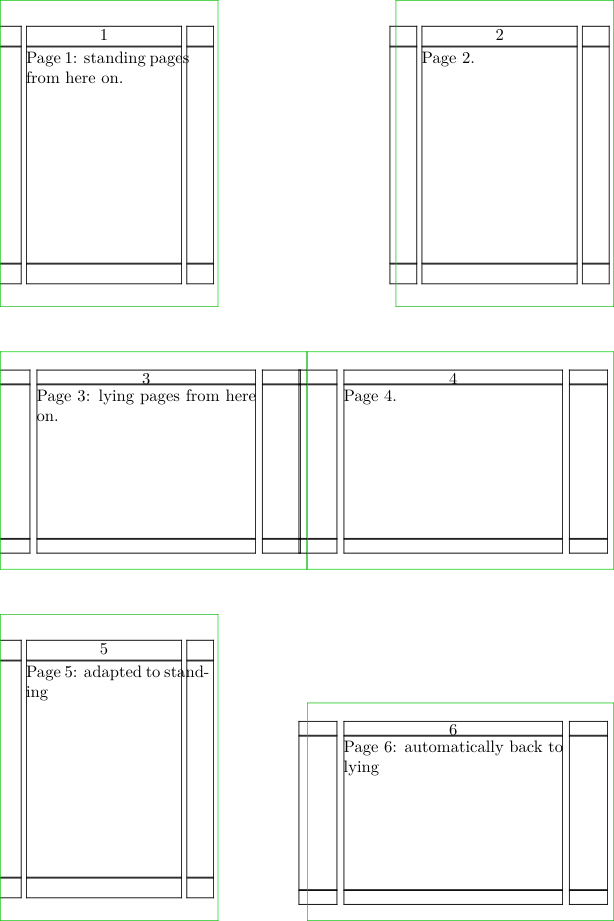

Contents
Summary
The command \setuppapersize sets the page size (and optionally sheet size) of the document (or for a part of it).
Settings
| \setuppapersize[...][...=...,...] | |
| [...] | name |
| top | command |
| bottom | command |
| left | command |
| right | command |
| method | normal none name |
| scale | number |
| nx | number |
| ny | number |
| dx | dimension |
| dy | dimension |
| width | dimension |
| height | dimension |
| topspace | dimension |
| backspace | dimension |
| offset | dimension |
| page | reset landscape mirrored negative rotated 90 180 270 name |
| paper | reset landscape mirrored negative rotated 90 180 270 name |
| option | fit max |
| distance | dimension |
| Option | Explanation | ||
|---|---|---|---|
| top |
|
||
| bottom |
|
||
| left |
|
||
| right |
|
||
| nx |
|
||
| ny |
|
||
| dx |
|
||
| dy |
|
||
| width |
|
||
| height |
|
||
| topspace |
|
||
| backspace |
|
||
Settings name
| \setuppapersize[...,...][...,...] | |
| [...,...] | reset landscape mirrored negative rotated 90 180 270 name |
| [...,...] | reset landscape mirrored negative rotated 90 180 270 name |
Description
The first argument of
\setuppapersize
is the dimension a page will have. The second argument is the size of the paper sheet the pages will be printed on; see
\setuparranging
for placing multiple pages on a sheet. If the second argument is omitted, the sheet size is assumed to equal the page size.
For example:
\setuppapersize[letter,landscape][oversized]
sets the size of the pages to letter size (landscape), and the size of the paper (before cutting) to oversized letter size, which has edges that are 1.5 cm longer. (If the sheet size uses modifiers on the paper size like here, you must leave out the name (“letter”) in the second argument.)
letter is a pre-defined papersize; you can define your own papersizes using \definepapersize.
There are several options you can use to modify a predefined paper size:
- portrait : the default paper sizes are “standing up”, taller than they are wide.
- landscape : turn the paper 90 degrees so it is “lying down”
- oversized : adds 1.5 cm to each edge
- undersized : subtracts 1.5 cm from each edge
- doublesized : doubles the width
- doubleoversized : doubles the width and adds 1.5 cm to each edge
Here’s a list of paper sizes.
Examples
Example 1
-
% Create a paper that can accomodate 2x4 squares of 52x52mm % (A9 is 37x52mm, and we’re placing it both portrait and landscape) \definepapersize[sheet][width=104mm,height=156mm] % We want 2x3 pages on a sheet. \setuppaper must come *before* \setuparranging! \setuppaper[nx=2, ny=3, dx=0mm, dy=0mm] \setuparranging[XY] % Define two papersizes in terms of A9 and sheet \definepapersize[standing][A9] [sheet] \definepapersize[lying] [A9,landscape][sheet] % Show the pages. \showframe \starttext \setuppapersize[standing] Page 1: standing pages from here on. \page Page 2. \page \setuppapersize[lying] Page 3: lying pages from here on. \page Page 4. \page \adaptpapersize[standing] Page 5: adapted to standing \page Page 6: automatically back to lying \page \stoptext
-
